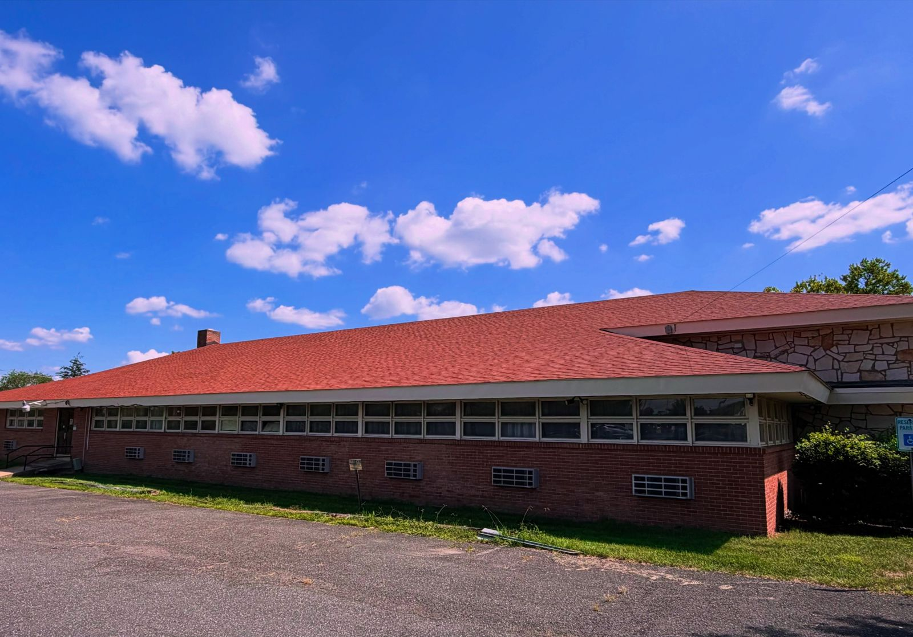
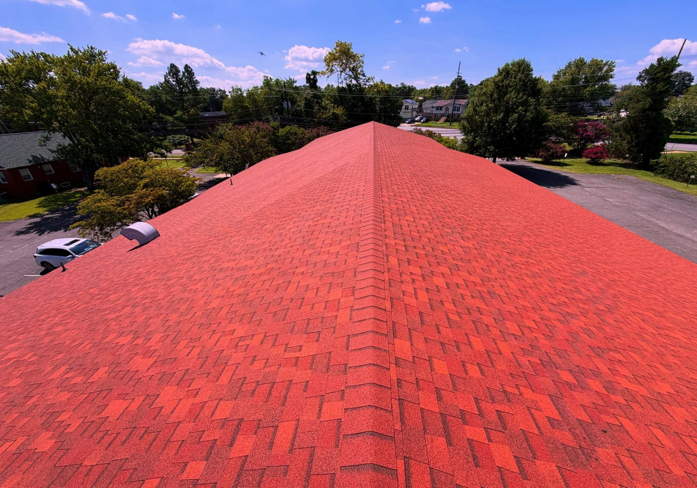
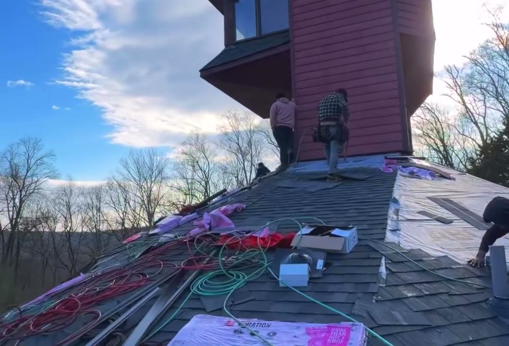
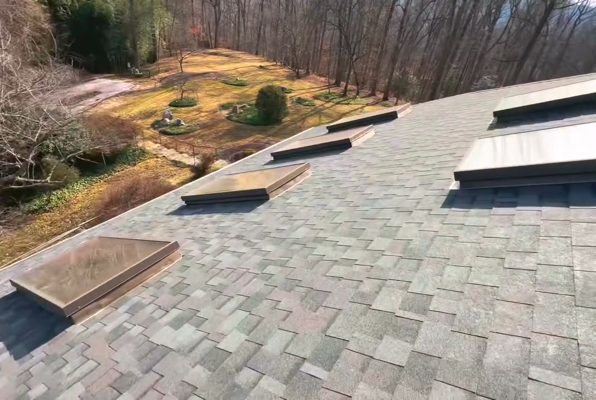
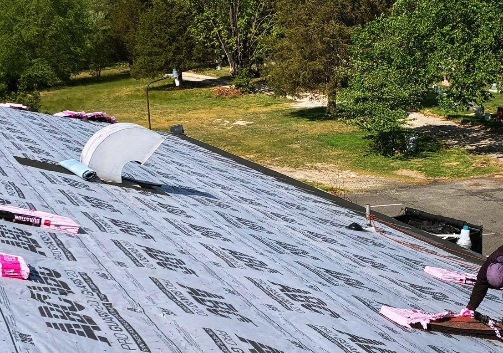

Roofing
Full replacements and repairs. Lately that's mostly Owens Corning Duration shingles, plus Brava synthetic where cedar shake used to be.
See recent roofsA lot of our jobs start with a storm and an insurance claim. Answer a few questions and we'll show up knowing your roof, your insurer and your deductible.
Start your free assessmentLicensed and insured · MHIC #164678 · Lanham, MD
This house has six problems. Tap one to fix it.
That's the work we do on real houses. Start with yours
Full replacements and repairs. Lately that's mostly Owens Corning Duration shingles, plus Brava synthetic where cedar shake used to be.
See recent roofsVinyl siding replacement, often on the same job as the roof and gutters. Recent houses got CertainTeed MainStreet.
See it on InstagramNew gutters and downspouts, usually replaced in the same job as the roof.
How an insurance job goesMissing shingles, a branch through the roof, siding torn off. We tarp it, photograph it and write up the repair.
More on storm damageWater extraction, drying and the rebuild after a leak or a flooded basement.
More on water damageSoot and smoke cleanup, odor removal and reconstruction after a fire.
More on fire damageA church campus with four buildings. A house with a tower, skylights and a wall of glass. The size of the job doesn't change how we do it.
Four buildings on one claim: the hall, the cemetery house, the rectory and the church. Approved by the insurer.


Full tear-off and new shingles, worked around a tower, a row of skylights and a glass sunroom.


Four steps, and you know who does what.
Roof age, insurance provider, deductible, your last claim, and photos of the damage. We get back to you within 24 to 48 hours.
We get on the roof, photograph the damage and tell you what we see.
The claim is yours to file. We write the repair estimate and answer your insurance company's questions about it.
Once it's approved we order materials, book the crew and get it done.
We're contractors, not public adjusters. We don't negotiate claims or advise on what your policy covers.

The age of your roof, your insurance provider and deductible, your last claim, any past repairs, your siding type, whether ceilings show water stains, and photos of the damage. We reply within 24 to 48 hours.
No. We look at the roof, siding and gutters, take photos and tell you what we found.
That depends on your policy and what caused the damage, and it is your insurer's decision. We give you photos and a written estimate to send in, and we answer the insurer's questions about that estimate.
Recent roofs are Owens Corning Duration shingles in Chateau Green, Terra Cotta and Onyx Black. We have also replaced cedar shake with Brava synthetic, and sided with CertainTeed MainStreet vinyl.
Yes. Maryland Home Improvement Commission license #164678, and we are insured.
We are based in Lanham and work across Prince George's, Montgomery, Anne Arundel and Howard counties.
Send the free assessment and we reply within 24 to 48 hours. If water is coming in right now, call.
Start your free assessmentOr call (301) 450-9487
Local pages: Bethesda, Potomac, Chevy Chase, Annapolis, Severna Park